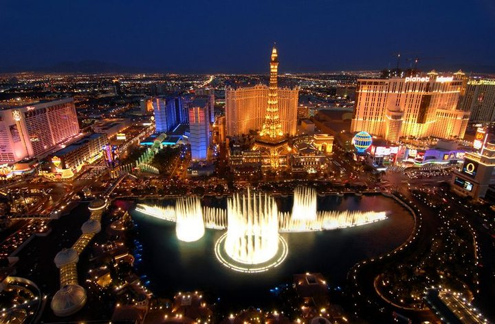
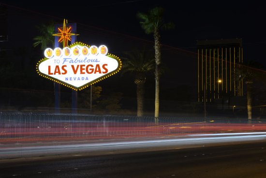
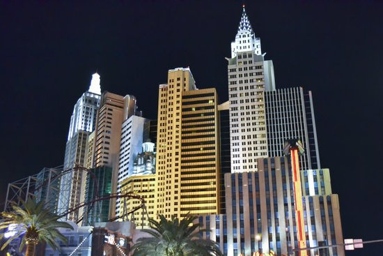
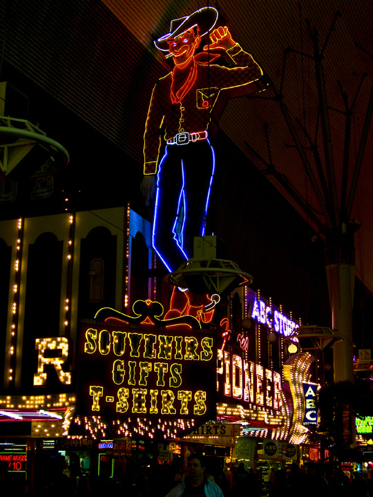
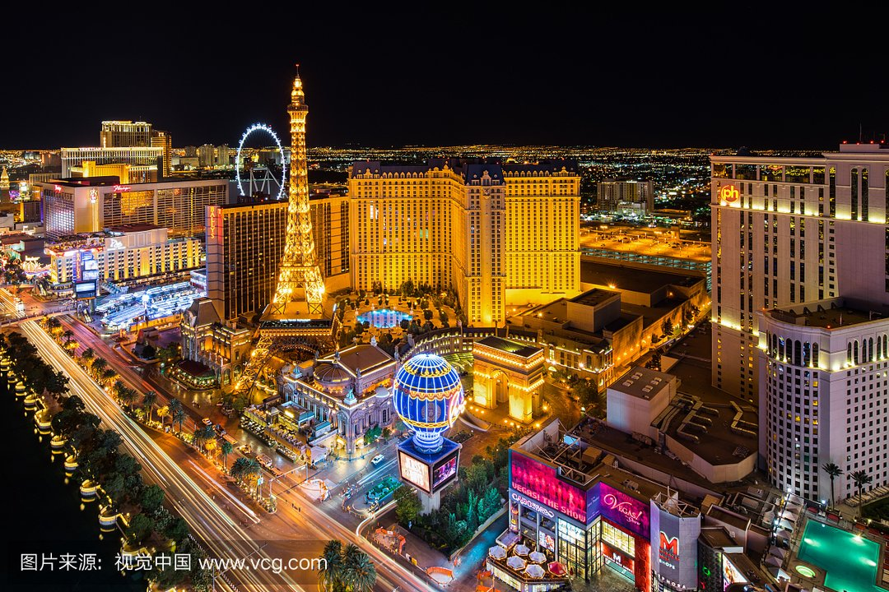
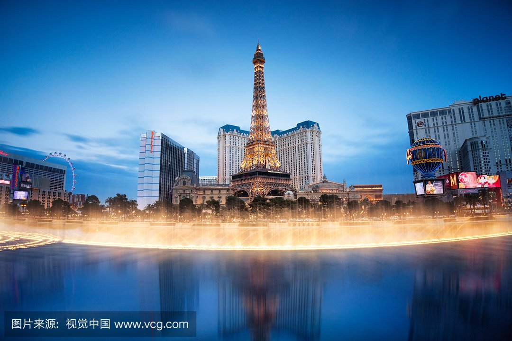
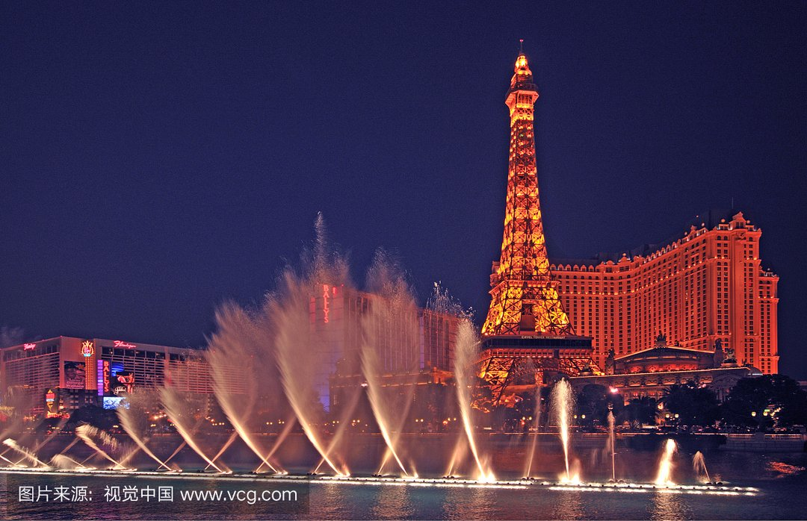

morly旅游网
一说拉斯维加斯，你肯定想到了是美丽的风景，还有就是有很多时尚潮流的地方，想过去美丽的拉斯维加斯吗？
从一个巨型游乐场到一个真正有血有肉、活色生香的城市，拉斯维加斯在10年间脱胎换骨，从一百年前的小村庄变成一个巨型旅游城市。
每年来拉斯维加斯旅游的3890万旅客中，来购物和享受美食的占了大多数，专程来赌博的只占少数。内华达州这个曾经被人讽刺为“罪恶之城”的赌城，已经逐步成熟，成为一个真正的城市了。
拉斯维加斯（Las Vegas） 是美国内华达州的最大城市，以赌博业为中心的庞大的旅游、购物、度假产业而著名，世界上十家最大的度假旅馆就有九家是在这里，是世界知名的度假圣地之一，
赌城拉斯维加斯
赌城拉斯维加斯的气质如一枚硬币的两面，一面是地狱，另一面是天堂，纵欲寻欢搭造的舞榭歌台散发着华丽迷人的气息，两个极端如影随形，无可分割。
 米高梅历险游乐园
拉斯维加斯最大、最受欢迎的游乐中心，在33英亩的场地内分为卡萨布兰加 (Csablanca)、大广场 (Plaza)、纽约 (New York)、 Strip区 (The Strip) 、亚细亚 (Asia) 、乡村 (Village)等九个主题区。歌舞表演及现场表演不停地上演，还有稀奇古怪、令人心惊胆颤的各种游戏，一整天也玩不不过来。
红石峡谷
位于拉斯维加斯市中心西面，为南内华达州最美的风景区之一，六亿年前是海底世界，经过几次地壳变动，形成今天的红石奇观。
 莱尔儿童博物馆
内有一百三十种互动式的展览，可以让儿童在游戏中了解成人世界的生活，如工作、赚钱、存钱、上街购物。另外也有游戏让小朋友得以体验盲人和聋人使用拐扙和轮椅的不方便处。
 从一个巨型游乐场到一个真正有血有肉、活色生香的城市，拉斯维加斯在10年间脱胎换骨，从一百年前的小村庄变成一个巨型旅游城市。
每年来拉斯维加斯旅游的3890万旅客中，来购物和享受美食的占了大多数，专程来赌博的只占少数。内华达州这个曾经被人讽刺为“罪恶之城”的赌城，已经逐步成熟，成为一个真正的城市了。行政区。
内容整理至网络，如有侵权，请联系我们！1255394075@qq.com